- O que faz um estudante/cientista/professor?
- Atividade comum: estudar, ler, produzir conteúdo, publicar
- Gerenciamento de uma grande quantidade de informação e conhecimento
- Redação de conteúdo em diferentes formatos
- Plano de Tese
- Projeto FAPESP
- Relatórios
- Artigos
- Dissertações e Teses (aluno, orientador, biblioteca, SVPG)
- Windows, Linux, Mac - Office, LibreOffice, LaTeX, ...
- Diversas regras em diferentes revistas, congressos, etc
Templates - Dissertações e Teses
Use seu tempo de forma eficiente!
Comissão de Pós-Graduação, SVPG, Biblioteca, LGN, CeTI-LQ
ESALQ/USP
Introdução
Exemplo 1

Exemplo 2
Theoretical and Applied Genetics

Formatos para citação adotados pelas principais revistas
- Citation Styles, CSL, http://citationstyles.org
- Mais de 8000 estilos de citação (abertos e gratuitos)
- As principais revistas participam e contribuem
- Tais formatos podem ser importados em vários programas gerenciadores de referências
Gerenciadores de Referências
Formato Atual


- Windows
- MS Word
- ABNT
Novas Regras - Proposta
- Desenvolver templates que possam ser usados em diferentes cenários
- Multiplataforma (Windows, Mac, Linux)
- Word, LibreOffice, LaTeX, (Google Docs)
- Gerenciadores de Referências
- Tutoriais
- Fácil utilização
Templates ("Modelos")
- Objetivo: eficiência e produtividade
- Use dos modernos recursos computacionais
- Foco no conteúdo, não nos formatos e regras
Template e tutorial no \(LaTeX\)
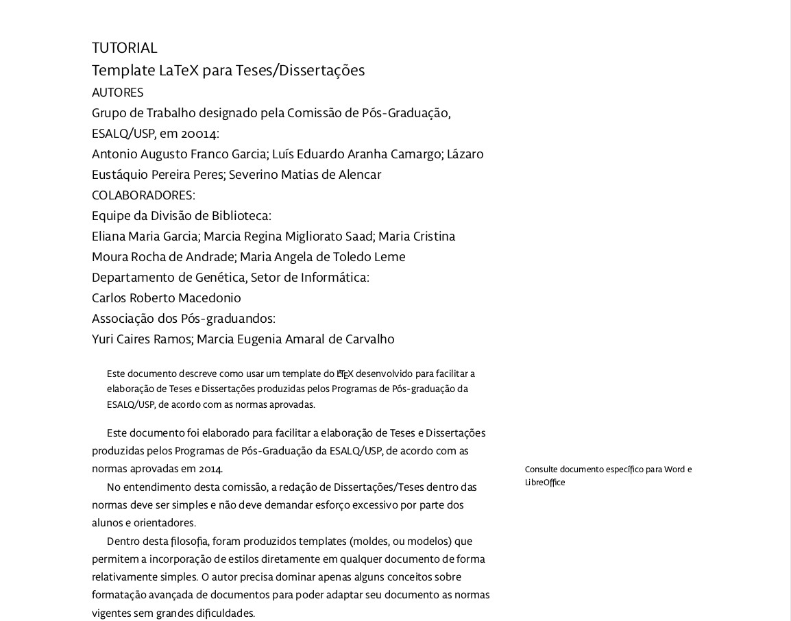
Informações
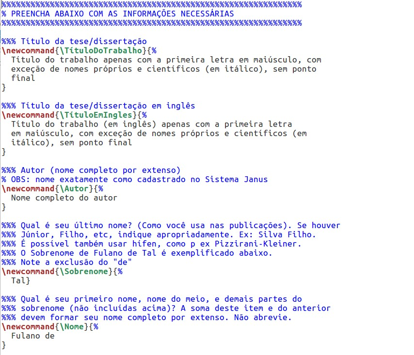
Arquivos
 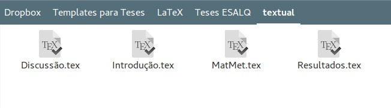
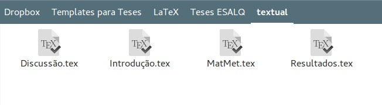
Compile. Pronto!

Ficha catalográfica (automaticamente!)
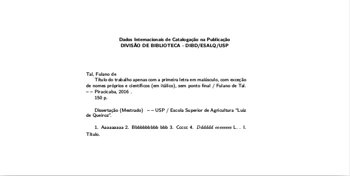

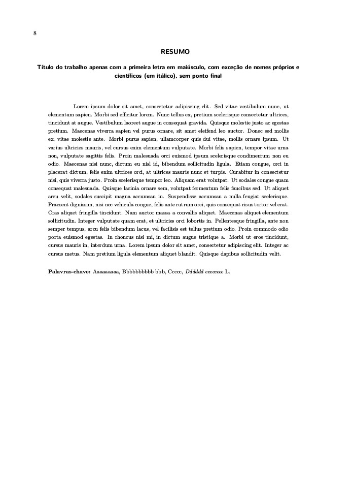
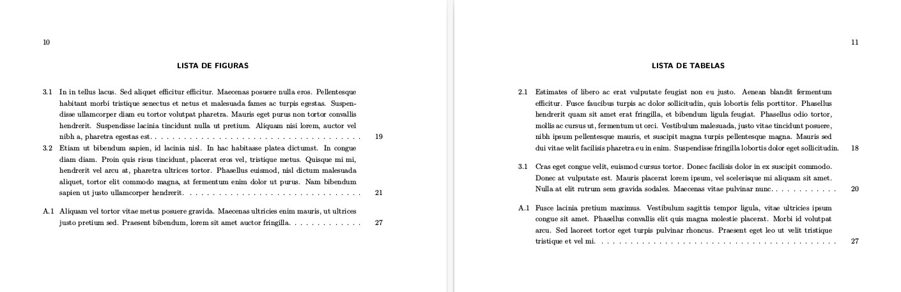


Template e tutorial no Word
Instale o template

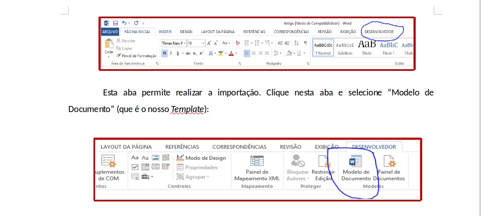

Altere configurações
- Tamanho da página
- Numeração
Use os novos estilos disponíveis em seu documento


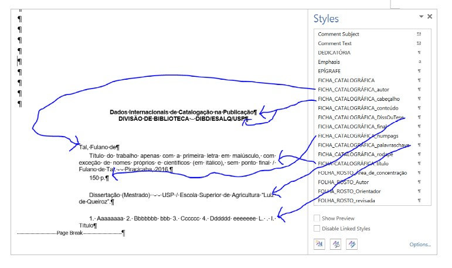
Sumário: será feito automaticamente
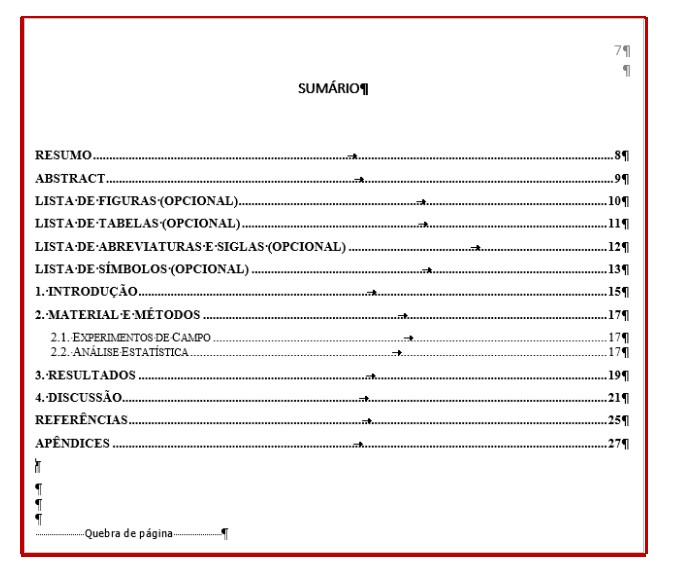
Template + Gerenciador de Referências
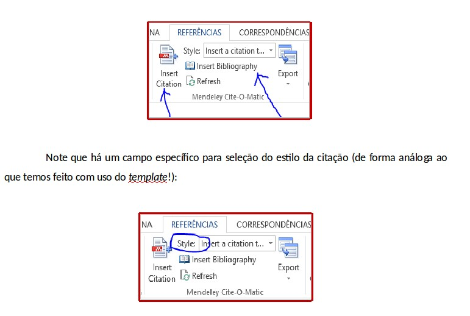
Tutoriais em Vídeo
Tutoriais em Vídeo
Ajude-nos com críticas e sugestões (tutoriais,
vídeos, traduções, etc)!
OBRIGADO!